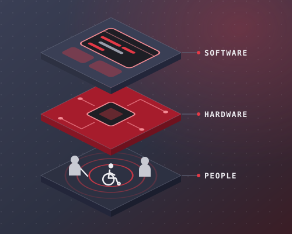
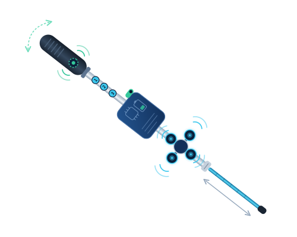
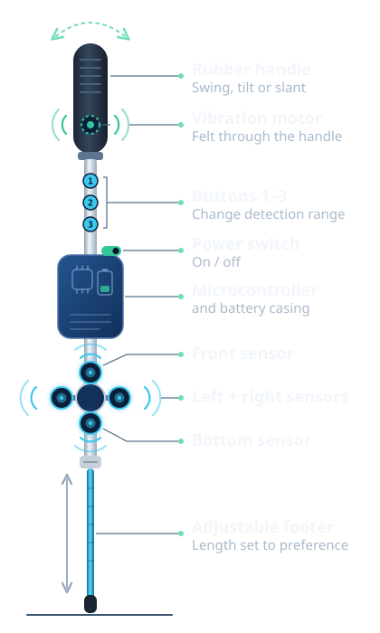

Professionalism
We demonstrate competence, integrity, responsibility, and respect in every aspect of our work. We are committed to delivering reliable products and services while maintaining high professional standards.
PHB Software SolutionsTechnology should serve humanity
Engineering seamless software that integrates flawlessly with hardware to solve complex, real-world human problems.

Featured product
BASTON smart cane
Smart cane sensing and smartphone-based computer vision for blind and visually impaired users.
Explore BASTONWho we are
At PHB Software Solutions, we develop innovative software and hardware-integrated solutions that make technology more accessible and inclusive. Our focus is on creating assistive technologies for Persons with Disabilities (PWDs), particularly individuals with visual impairments, helping them achieve greater independence, accessibility, and quality of life through technology.
What we stand for
The letters in PHB stand for the values behind everything we build: Professionalism, Human-Centered Innovation and Business Excellence.
We demonstrate competence, integrity, responsibility, and respect in every aspect of our work. We are committed to delivering reliable products and services while maintaining high professional standards.
We develop innovative solutions by putting people, their needs, experiences, and well-being at the center of our ideas and decisions. We aim to create technology and products that are practical, accessible, meaningful, and beneficial to the community.
We strive for continuous improvement, quality, efficiency, and sustainable growth. We pursue excellence in our products, services, and business practices while creating lasting value for our customers and stakeholders.
What drives us
To empower visually impaired individuals with affordable, reliable, and offline-capable assistive technology that improves spatial awareness, fosters independence, and reduces reliance on external support in daily mobility.
To build a safer, fully inclusive world where advanced digital and physical technology breaks mobility barriers, ensuring every individual, regardless of financial background, has access to smart environments and physical independence.
Products
An assistive technology concept combining smart cane sensing and smartphone-based computer vision to help blind and visually impaired users detect and identify obstacles in their surroundings.
The BASTON cane alerts the user with a vibration motor and buzzer when an obstacle is detected, and the user feels the vibration through the handle. Its default detection range of 2–50 cm can be extended up to 200 cm with three buttons.

Why BASTON exists
The need
Navigating unfamiliar environments can involve detecting obstacles that may not be immediately apparent.
The approach
BASTON combines ultrasonic sensing, vibration and audio feedback, and smartphone-based computer vision.
The experience
The system is designed to provide additional environmental information that can support independent navigation.
About BASTON
BASTON brings together three parts: a modified cane, a smartphone app that can recognize objects, and location support.
A lightweight cane with a rubber handle, ultrasonic sensors, a vibration motor and buzzer, three range buttons, a power switch, and an adjustable footer. It also holds the smartphone.
The smartphone camera provides a live view that is processed by a machine-learning model to identify objects.
The study describes location recording through a cloud database and tracking through Google Maps.
Technology
Four stages, from sensing an obstacle to hearing what it is.
Ultrasonic sensors emit sound pulses and measure returning echoes to detect nearby obstacles.
On the caneThe vibration motor and buzzer alert the user when an obstacle is detected. The vibration is felt through the handle.
On the caneThe smartphone camera captures visual information that is processed for object detection.
On the smartphoneText-to-speech converts detected object labels into audio output.
On the smartphoneThe connected system
The cane senses what is nearby. The smartphone looks ahead and names what it sees. Both report back to the user through touch and sound.

On the cane
The user swings, tilts or slants the cane as they prefer. It carries the sensors, buttons and smartphone.
Send out sound pulses and listen for the echo.
An echo within the selected range, from 2–50 cm up to 150–200 cm, means something is nearby.
On the smartphone
Provides a live view of the surroundings.
A machine-learning model processes the live view.
Objects the model detects are given a label.
Back to the user
The handle vibrates and the buzzer sounds for obstacles. Object labels are spoken aloud.
The user receives added information about their surroundings.
Features
Each feature below is described as it appears in the BASTON project materials.
The default threshold is 2–50 cm when the power switch is turned on. Three buttons change the range in 50 cm steps up to 200 cm.
4 settings · 2–200 cmSensors on the upper part detect obstacles above the user's waistline, while the sensor on the lower part detects obstacles at the center.
Above waist · center levelThe system describes the lower area around the cane as detecting potholes and stairs.
Potholes · stairsWhen an obstacle is detected, the vibration motor and buzzer alert the user. The vibration is felt through the handle during operation.
Motor inside the handleDetected objects can be labeled and converted to speech through the mobile application.
Text-to-speechThe evaluation reports that the device can function without an internet connection, while the app and some connected features may operate independently.
No internet required for the deviceThe user can swing the cane side to side, tilt it or slant it according to their liking, using the rubber handle.
Swing · tilt · slantThe footer at the bottom of the cane can be adjusted according to the user's preference.
Set to preferenceTurning on the power switch sets the default range. Each button selects a longer range.
| Setting | Detection range |
|---|---|
| Power on (default) | 2–50 cm |
| Button 1 | 50–100 cm |
| Button 2 | 100–150 cm |
| Button 3 | 150–200 cm |
Research
The BASTON study reports performance metrics and a software quality evaluation based on the ISO 25010 standard. All values are shown exactly as reported.
98.14%
F1 Score
Balance of precision and recall.
97.53%
Precision
Share of positive predictions that were correct.
98.75%
Recall
Share of actual positives that were found.
4.46
Overall ISO 25010 Mean
Overall mean of the software quality evaluation.
Performance metrics as reported in the BASTON study.
| Quality characteristic | Mean | Rating |
|---|---|---|
| Functional Suitability | 4.30 | |
| Reliability | 4.70 | |
| Performance Efficiency | 4.53 | |
| Usability | 4.60 | |
| Security | 4.60 | |
| Compatibility | 4.20 | |
| Maintainability | 4.52 | |
| Portability | 4.60 | |
| Overall ISO 25010 Mean | 4.46 | |
Mean scores and ratings as reported in the BASTON study. Bars show each mean against a maximum of 5.
FAQ
Answers are based on the BASTON project materials. For anything not covered here, contact PHB Software Solutions.
BASTON is an assistive technology concept developed by PHB Software Solutions. It combines a modified smart cane with smartphone-based computer vision to help blind and visually impaired users detect and identify obstacles in their surroundings.
BASTON is designed for blind and visually impaired users.
Ultrasonic sensors on the cane emit sound pulses and measure the returning echoes. Sensors on the upper part detect obstacles above the user's waistline, and the sensor on the lower part detects obstacles at the center. The lower area around the cane is also described as detecting potholes and stairs.
When an obstacle is detected, the vibration motor and buzzer alert the user, who feels the vibration through the handle.
Yes. When the power switch is turned on, the default threshold is 2–50 cm. Pressing the 1st button sets the range to 50–100 cm, the 2nd button to 100–150 cm, and the 3rd button to 150–200 cm.
The smartphone sits in a holder on the cane. Its camera provides a live view for object identification, and the mobile application converts detected object labels to speech. The study also describes location recording through a cloud database and tracking through Google Maps.
The smartphone camera captures a live view, which a machine-learning model processes to detect and identify objects. Text-to-speech then turns the detected object labels into audio output.
The evaluation reports that the device can function without an internet connection, while the app and some connected features may operate independently.
The study reports an F1 score, precision and recall, along with a software quality evaluation across eight ISO 25010 characteristics: functional suitability, reliability, performance efficiency, usability, security, compatibility, maintainability and portability. See the Research section for the reported values.
BASTON is presented as an assistive technology concept and research project. This site does not announce commercial availability. For the current status of the project, please contact PHB Software Solutions.
About Us
The people behind PHB Software Solutions.
Passionate in
Passionate in
Passionate in
Explore the technology, research, and vision behind BASTON, or get in touch with our team.
Contact Us
Have a question about PHB Software Solutions, the BASTON project, its technology, or the research behind it? Send us a message using this form.